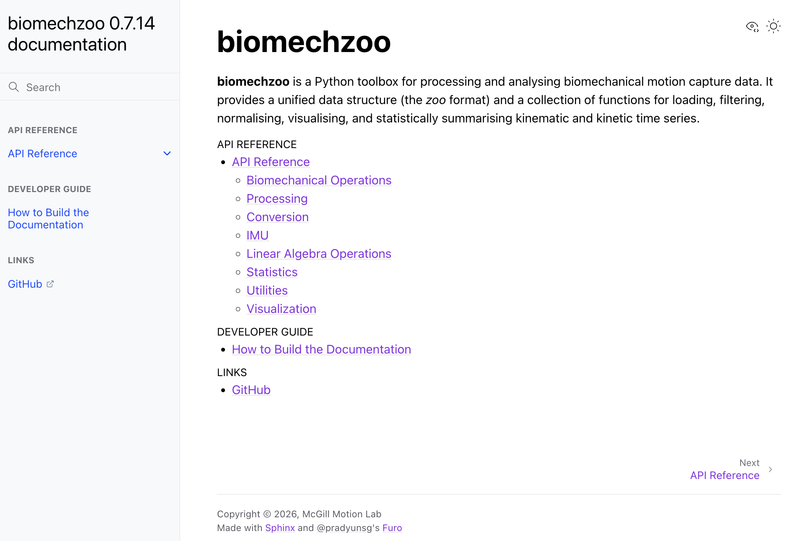

Wearable Device Engineer
McGill Motion Technology & Innovation (MOTION) Lab
- Built a 3D lower-limb gait kinematics pipeline for wearable IMU systems, computing hip, knee, ankle, and pelvis joint angles from raw sensor data.
- Developed a Python signal processing pipeline using Kalman filtering to extract cadence and foot progression angle from raw accelerometer and gyroscope data.
- Applied time-frequency domain analysis to compute jump height and other dynamic metrics; built a MATLAB preprocessing pipeline for gait cycle segmentation using the biomechZoo toolbox.
- Validated algorithms against reference models using RMSE and waveform correlation metrics; extended the biomechZoo open-source codebase and authored public-facing documentation.
Project Visuals
